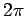
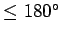
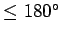

Da die trigonometrischen Funktionen periodisch sind (Periode  bzw.  ), kann die Ermittlung der Funktionswerte für beliebige Argumentwerte x nach den folgenden Regeln vereinfacht werden:
), kann die Ermittlung der Funktionswerte für beliebige Argumentwerte x nach den folgenden Regeln vereinfacht werden:
Argument x mit x bzw. x : Wenn der Winkel x größer als  (bzw. größer als
(bzw. größer als  ) ist, dann werden die Werte der trigonometrischen Funktionen auf Funktionswerte für Winkel
) ist, dann werden die Werte der trigonometrischen Funktionen auf Funktionswerte für Winkel  mit
mit  (bzw. ) nach folgenden Regeln zurückgeführt (n ganzzahlig):
(bzw. ) nach folgenden Regeln zurückgeführt (n ganzzahlig):
Argument x mit x < 0: Wenn das Argument negativ ist (), dann werden die Funktionen mit den folgenden Formeln auf Funktionen mit positivem Argument zurückgeführt:
 |
(2.70c) |
Argument x mit x : Wenn ist, dann werden die Funktionen mit Hilfe der Reduktionsformeln auf Funktionen eines spitzen Winkels zurückgeführt. Man nennt die Beziehungen zwischen Funktionswerten von Winkeln, die sich um oder unterscheiden bzw. zu oder ergänzen, Quadrantenrelationen.
Tabelle Reduktionsformeln oder Quadrantenrelationen der trigonometrischen Funktionen
Aus der 1. und 2. Spalte ergeben sich die Formeln der Komplementsätze, aus der 1. und 3. die Formeln der Supplementsätze. Da der Komplementwinkel oder das Komplement von ist, nennt man Beziehungen der Art
Komplementsätze.
Die Beziehungen zwischen den trigonometrischen Funktionen für Supplementwinkel der Art
werden wegen Supplementsätze genannt.
Argument x mit x : Wenn ein spitzer Winkel vorliegt, dann wurden die Funktionswerte früher Tabellen entnommen; heute werden sie vom Rechner abgefragt.